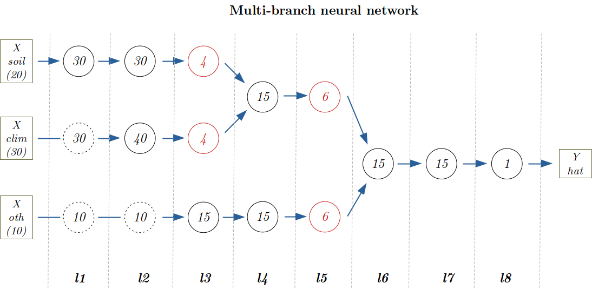

A deep neural network with multi-branch architecture
Often we can "divide" our feature sets into different groups, where for each group we have many, many variables whose importance in prediction we don't know, but for which using a fully dense layer would be too computationally expensive. For example, we want to predict the growth of forest trees based on soil characteristics, climate characteristics and a bunch of other data (species, age, density...).
A soil (or climate) database may have hundreds of variables, how can we reduce them to a few that encode all the "soil" information? Sure, we could do a PCA or a clustering analysis, but a better way is to let our model itself find a way to encode the soil information into a vector in a way that is optimal for our prediction goal, i.e. we target the encoding task at our prediction goal.
So we run a multi-branch neural network where one branch is given by the soil variables - it starts from all the hundreds of variables and ends in a few neuron outputs, another branch in a similar way is for the climate variables, we merge them in a branch to take into account the soil-weather interrelation (for example, it is well known that the water retention capacity of a sandy soil is quite different from that of a clay soil) and finally we merge this branch with the other variable branch to arrive at a single predicted output. In this example we focus on building, training and predicting a multi-branch neural network. See the other examples for cross-validation, hyperparameter tuning, scaling, overfitting, encoding, etc.
Data origin:
- while we hope to apply this example soon on actual real world data, for now we work on synthetic random data just to assess the validity of the network configuration.
Library and data generation
Activating the local environment specific to the tutorials
using Pkg
Pkg.activate(joinpath(@__DIR__,"..","..","..")) Activating environment at `~/work/BetaML.jl/BetaML.jl/docs/Project.toml`We first load all the packages we are going to use
using StableRNGs, BetaML, PlotsHere we are explicit and we use our own fixed RNG:
seed = 123
AFIXEDRNG = StableRNG(seed)StableRNGs.LehmerRNG(state=0x000000000000000000000000000000f7)Here we generate the random data..
N = 100 # records
soilD = 20 # dimensions of the soil database
climateD = 30 # dimensions of the climate database
othervarD = 10 # dimensions of the other variables database
soilX = rand(StableRNG(seed),N,soilD)
climateX = rand(StableRNG(seed+10),N,climateD)
othervarX = rand(StableRNG(seed+20),N,othervarD)
X = hcat(soilX,climateX,othervarX)
Y = rand(StableRNG(seed+30),N)100-element Vector{Float64}:
0.884918386404177
0.9142486375724972
0.0016232322280105294
0.449871593944442
0.499851113344403
0.21607315721697695
0.9576515581004998
0.08022797756181599
0.5308455561932268
0.23067938163105595
⋮
0.758876840322309
0.9416405901641678
0.10145252800683302
0.45325510138909264
0.2338971743463818
0.030763227279190897
0.6056263978743366
0.11966655357661793
0.7667551896724969Model definition

In the figure above, each circle represents a multi-neuron layer, with the number of neurons (output dimensions) written inside. Dotted circles are RreplicatorLayers, which simply "pass through" the information to the next layer. Red layers represent the layers responsible for the final step in encoding the information for a given branch. Subsequent layers will use this encoded information (i.e. decode it) to finally provide the prediction for the branch. We create a first branch for the soil variables, a second for the climate variables and finally a third for the other variables. We merge the soil and climate branches in layer 4 and the resulting branch and the other variables branch in layer 6. Finally, the single neuron layer 8 provides the prediction.
The weights along the whole chain can be learned using the traditional backpropagation algorithm.
The whole model can be implemented with the following code:
- layer 1:
l1_soil = DenseLayer(20,30,f=relu,rng=copy(AFIXEDRNG))
l1_climate = ReplicatorLayer(30)
l1_oth = ReplicatorLayer(10)
l1 = GroupedLayer([l1_soil,l1_climate,l1_oth])GroupedLayer(AbstractLayer[DenseLayer{typeof(relu), typeof(drelu), Float64}([-0.22099198692115404 -0.10495000676358948 … -0.19440469097013582 0.14541856519390356; -0.09180565828486908 0.16425292059196311 … 0.22259640178371104 0.17448564903472735; … ; -0.031034807900812034 -0.10825060261742622 … -0.25223732895743156 -0.03021041840450539; -0.23152658559988354 -0.06551449794425351 … -0.24163964357296414 -0.08253644248621761], [0.002400480052845211, 0.005024842378800021, -0.12247502059719417, -0.13233855383182289, -0.2942503639158154, 0.3133752599260717, 0.3155603857320442, 0.09339415514400157, 0.020063912961234776, -0.16476418754672909 … -0.2244454611107369, -0.2816222300689276, 0.19998895739093697, 0.2322652760876876, -0.1408852682204776, -0.2982861458922995, 0.0375145801345213, -0.2615424416276876, 0.10042201982306459, -0.14972135218393484], BetaML.Utils.relu, BetaML.Utils.drelu), ScalarFunctionLayer{0, typeof(identity), typeof(didentity), Nothing, Float64}(fill(NaN), 30, identity, BetaML.Utils.didentity, nothing), ScalarFunctionLayer{0, typeof(identity), typeof(didentity), Nothing, Float64}(fill(NaN), 10, identity, BetaML.Utils.didentity, nothing)])- layer 2:
l2_soil = DenseLayer(30,30,f=relu,rng=copy(AFIXEDRNG))
l2_climate = DenseLayer(30,40,f=relu,rng=copy(AFIXEDRNG))
l2_oth = ReplicatorLayer(10)
l2 = GroupedLayer([l2_soil,l2_climate,l2_oth])GroupedLayer(AbstractLayer[DenseLayer{typeof(relu), typeof(drelu), Float64}([-0.20173716044100454 -0.09580581019122952 … -0.017014150858611687 0.1922569229929041; -0.08380671658205638 0.14994171624053831 … -0.19258791634900424 -0.003520185514587215; … ; -0.02833077392519051 -0.09881882819515353 … 0.13970614872742276 0.30042844298081317; -0.21135388932534493 -0.05980628061282245 … -0.10856711018283455 -0.1405039724044175], [-0.07449197802054383, 0.2713582464637664, -0.2720762515295638, 0.242375693345381, -0.025494784949822658, -0.2665627951433142, -0.16679250419857353, 0.23576831566768197, -0.16752089661733033, -0.12417830190346649 … 0.2810833304148249, 0.2748353504390094, 0.07824503665557964, 0.021927688941321022, 0.18033408893677322, 0.0224537575718346, -0.30860872527465694, -0.026412838112855885, 0.06525835382113082, 0.10135105609216083], BetaML.Utils.relu, BetaML.Utils.drelu), DenseLayer{typeof(relu), typeof(drelu), Float64}([-0.18677231800732202 0.023791592801394923 … 0.027713605632077642 -0.19713441064810971; -0.07758994270760938 0.18765061785472675 … -0.21272724427882408 -0.08215774247226301; … ; -0.09985135903648273 -0.29122451141598765 … -0.13277456818283767 -0.11245376968159376; 0.24497425427024377 0.06109632753532401 … 0.23094687418973092 0.1277040401319976], [0.15934674089605289, -0.23720745057767395, 0.0519102244056493, -0.11578046490070068, 0.2276465938512311, 0.02329542835188908, -0.025325056013276614, -0.24420101073054237, -0.10973215171697273, -0.27016240356732113 … 0.13062473422034115, 0.18629938358477105, 0.09795892367214726, -0.2602066614582673, -0.22479899078033072, -0.02216196573999868, 0.18845221567298515, -0.15818118201385012, -0.12915958493956167, 0.22788306414568893], BetaML.Utils.relu, BetaML.Utils.drelu), ScalarFunctionLayer{0, typeof(identity), typeof(didentity), Nothing, Float64}(fill(NaN), 10, identity, BetaML.Utils.didentity, nothing)])- layer 3:
l3_soil = DenseLayer(30,4,f=relu,rng=copy(AFIXEDRNG)) # encoding of soil properties
l3_climate = DenseLayer(40,4,f=relu,rng=copy(AFIXEDRNG)) # encoding of climate properties
l3_oth = DenseLayer(10,15,f=relu,rng=copy(AFIXEDRNG))
l3 = GroupedLayer([l3_soil,l3_climate,l3_oth])GroupedLayer(AbstractLayer[DenseLayer{typeof(relu), typeof(drelu), Float64}([-0.2679921483797161 -0.052098013489502715 … 0.166840684158097 0.2464285764903124; -0.1113307135699636 -0.014039099112457487 … -0.29221532519407006 -0.3424420903066687; 0.14203749249834413 0.22178229338606276 … -0.2931088470110914 -0.1434295431248639; -0.3841831690369466 0.35663713516226253 … -0.14769956873835716 -0.4153456620397359], [0.05288648831950299, 0.06651223912032905, -0.35155131582779264, -0.04141503505439348], BetaML.Utils.relu, BetaML.Utils.drelu), DenseLayer{typeof(relu), typeof(drelu), Float64}([-0.2355782496021987 -0.045796710462647716 … 0.31894234611593536 0.2363796624848376; -0.09786516055916233 -0.012341057060442029 … -0.13958409621442247 0.016140167895427604; 0.12485792611071111 0.19495751940695455 … 0.2152034952137058 0.15379421801666443; -0.33771585860087716 0.3135015430587427 … 0.19580290330943434 -0.3150613638753874], [0.33509427677923637, -0.24286422478060207, 0.18724149327799094, 0.3017929329741991], BetaML.Utils.relu, BetaML.Utils.drelu), DenseLayer{typeof(relu), typeof(drelu), Float64}([-0.31252986507967373 0.058341621509476194 … 0.06167571385566395 0.28727607513303477; -0.12983280704905176 0.0067367146031626635 … 0.0775659333458173 0.05708840668304638; … ; 0.4352442563633765 -0.043889846238972074 … -0.11572113834245884 -0.3254155852638346; 0.23437951637535126 -0.32742803740529064 … -0.11998148506797579 -0.36671099297807397], [0.4249353038335545, -0.0060680215053545705, 0.42312483672888945, -0.18517922953764276, 0.2854996988787626, 0.25976190525585263, 0.3135930594132218, 0.021412352384989397, 0.20403108643495693, -0.4179761319649173, 0.4445527941888917, -0.32219580343911647, 0.2484039113555796, 0.40037356922251777, 0.24354822151619004], BetaML.Utils.relu, BetaML.Utils.drelu)])- layer 4:
l4_soilclim = DenseLayer(8,15,f=relu,rng=copy(AFIXEDRNG))
l4_oth = DenseLayer(15,15,f=relu,rng=copy(AFIXEDRNG))
l4 = GroupedLayer([l4_soilclim,l4_oth])GroupedLayer(AbstractLayer[DenseLayer{typeof(relu), typeof(drelu), Float64}([-0.32583490846212404 0.0608253451209404 … 0.22774155488091585 0.25044616314440604; -0.1353600584360914 0.007023510490741014 … 0.24270819760459106 0.3988581508501745; … ; 0.45377350543658346 -0.04575832785787187 … 0.28165888223557434 -0.17438701968475856; 0.24435753761993473 -0.34136732682711074 … -0.19946871255550858 -0.5049928387420655], [0.06430137668082792, 0.08086807571196608, -0.42742927919733786, -0.05035395341800741, -0.22509863493258858, -0.4534641912858625, 0.3244850141930212, 0.003922880931908512, 0.3081759150828153, 0.15497321643127593, 0.19923794816726215, -0.11270119757996805, -0.19627908758226476, -0.12064762677747748, -0.12508934528323323], BetaML.Utils.relu, BetaML.Utils.drelu), DenseLayer{typeof(relu), typeof(drelu), Float64}([-0.28529942833030564 0.053258370236947905 … 0.13362412131008783 0.0748551377347827; -0.11852059520830227 0.00614975091937775 … -0.3963232492997551 0.269616222787747; … ; 0.39732182872463784 -0.04006576471753048 … -0.17762993151319756 0.4243758508329868; 0.21395824689321896 -0.29889953674420494 … 0.3337306726412689 -0.20018404780808433], [0.1246171452199204, 0.3406320201183629, 0.30027371740281594, -0.31045711331395665, -0.26122528587806904, -0.1988528207767236, 0.08239580363245547, 0.04418944360452565, 0.0056477077063512016, -0.30106055723135583, -0.2803146819430459, -0.3315777356443782, 0.2637514278447358, -0.3298342647937434, 0.27031486225948254], BetaML.Utils.relu, BetaML.Utils.drelu)])- layer 5:
l5_soilclim = DenseLayer(15,6,f=relu,rng=copy(AFIXEDRNG)) # encoding of soil and climate properties together
l5_oth = DenseLayer(15,6,f=relu,rng=copy(AFIXEDRNG)) # encoding of other vars
l5 = GroupedLayer([l5_soilclim,l5_oth])GroupedLayer(AbstractLayer[DenseLayer{typeof(relu), typeof(drelu), Float64}([-0.34099803896712877 0.28219978674570734 … -0.5317007806698574 -0.41051685241056524; -0.14165920618830374 0.4537915175816062 … 0.11154612257273655 0.371036892283525; … ; -0.06629045119945792 0.21524150618088933 … -0.24542735255063525 -0.08405701279357675; -0.0178636027031287 0.20693430746507202 … -0.22376119867964822 0.19223140625856194], [0.23833978984097826, 0.2540029237967071, 0.056012474473990714, 0.5033870694489802, 0.3184640039347467, 0.19595420864038715], BetaML.Utils.relu, BetaML.Utils.drelu), DenseLayer{typeof(relu), typeof(drelu), Float64}([-0.34099803896712877 0.28219978674570734 … -0.5317007806698574 -0.41051685241056524; -0.14165920618830374 0.4537915175816062 … 0.11154612257273655 0.371036892283525; … ; -0.06629045119945792 0.21524150618088933 … -0.24542735255063525 -0.08405701279357675; -0.0178636027031287 0.20693430746507202 … -0.22376119867964822 0.19223140625856194], [0.23833978984097826, 0.2540029237967071, 0.056012474473990714, 0.5033870694489802, 0.3184640039347467, 0.19595420864038715], BetaML.Utils.relu, BetaML.Utils.drelu)])- layer 6:
l6 = DenseLayer(12,15,f=relu,rng=copy(AFIXEDRNG))DenseLayer{typeof(relu), typeof(drelu), Float64}([-0.30073200288924506 0.056139251472425655 … 0.40889418676079675 0.15683666381492395; -0.12493167683235795 0.0064824066493160415 … -0.00583895641594151 0.15007173020678571; … ; 0.4188139809577231 -0.04223302423460301 … 0.3852596466117198 0.18948440372346237; 0.22553179478640556 -0.31506777589362567 … 0.23435438542171144 0.14016634888453022], [-0.34451649602325196, -0.18026146016666733, -0.46490990190757997, 0.03944270782654263, 0.012755951187655101, -0.06772388574853011, -0.23984131830386746, -0.003076128284588364, -0.31743581919208824, 0.043054246416549924, -0.06055048760519316, 0.38755645441087655, 0.394985259496251, -0.40891816121096203, -0.31444357882405854], BetaML.Utils.relu, BetaML.Utils.drelu)- layer 7:
l7 = DenseLayer(15,15,f=relu,rng=copy(AFIXEDRNG))DenseLayer{typeof(relu), typeof(drelu), Float64}([-0.28529942833030564 0.053258370236947905 … 0.13362412131008783 0.0748551377347827; -0.11852059520830227 0.00614975091937775 … -0.3963232492997551 0.269616222787747; … ; 0.39732182872463784 -0.04006576471753048 … -0.17762993151319756 0.4243758508329868; 0.21395824689321896 -0.29889953674420494 … 0.3337306726412689 -0.20018404780808433], [0.1246171452199204, 0.3406320201183629, 0.30027371740281594, -0.31045711331395665, -0.26122528587806904, -0.1988528207767236, 0.08239580363245547, 0.04418944360452565, 0.0056477077063512016, -0.30106055723135583, -0.2803146819430459, -0.3315777356443782, 0.2637514278447358, -0.3298342647937434, 0.27031486225948254], BetaML.Utils.relu, BetaML.Utils.drelu)- layer 8:
l8 = DenseLayer(15,1,f=relu,rng=copy(AFIXEDRNG))DenseLayer{typeof(relu), typeof(drelu), Float64}([-0.39066233134959216 -0.16229100881131464 … 0.5440553204542207 0.29297439546918913], [0.07292702688684527], BetaML.Utils.relu, BetaML.Utils.drelu)Finally we put the layers together and we create our NeuralNetworkEstimator model:
layers = [l1,l2,l3,l4,l5,l6,l7,l8]
m = NeuralNetworkEstimator(layers=layers,opt_alg=ADAM(),epochs=100,rng=copy(AFIXEDRNG))NeuralNetworkEstimator - A Feed-forward neural network (unfitted)Fitting the model
We are now ready to fit the model to the data. By default BetaML models return directly the predictions of the trained data as the output of the fitting call, so there is no need to separate call predict(m,X).
Ŷ = fit!(m,X,Y)100-element Vector{Float64}:
0.8914556986046415
0.9115214545008908
0.0
0.4482224726045145
0.5040443877630556
0.22168784615178277
0.964408804407526
0.07735405250940493
0.5295718411472272
0.2278572271244913
⋮
0.798336424441835
0.9103770300469972
0.09212690390893662
0.4553317698946729
0.23361357183383413
0.0
0.6066950430614358
0.12725625856856926
0.8345485301545944Model quality assessment
We can compute the relative mean error between the "true" Y and the Y estimated by the model.
rme = relative_mean_error(Y,Ŷ)0.01344636290425473Of course we know there is no actual relation here between the X and The Y, as both are randomly generated, the result above just tell us that the network has been able to find a path between the X and Y that has been used for training, but we hope that in the real application this learned path represent a true, general relation beteen the inputs and the outputs.
Finally we can also plot Y again Ŷ and visualize how the average loss reduced along the training:
scatter(Y,Ŷ,xlabel="vol observed",ylabel="vol estimated",label=nothing,title="Est vs. obs volumes")loss_per_epoch = info(m)["loss_per_epoch"]
plot(loss_per_epoch, xlabel="epoch", ylabel="loss per epoch", label=nothing, title="Loss per epoch")This page was generated using Literate.jl.